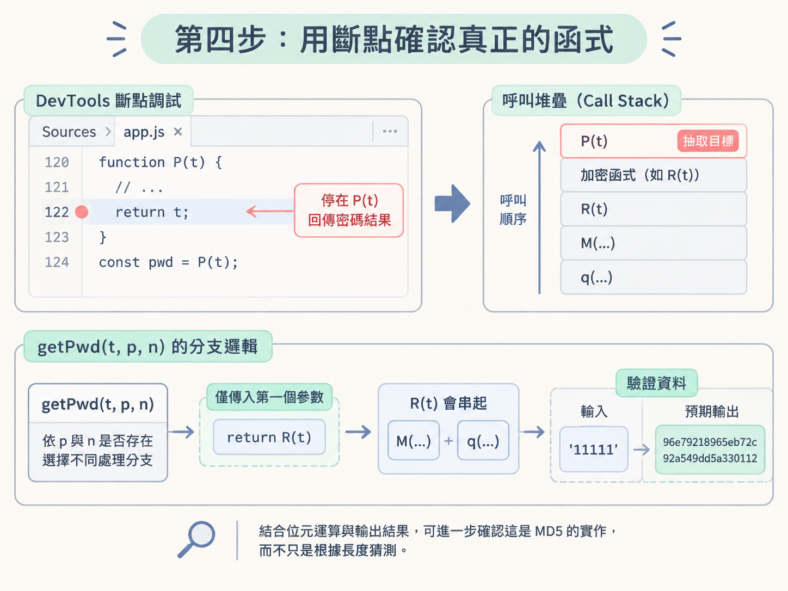
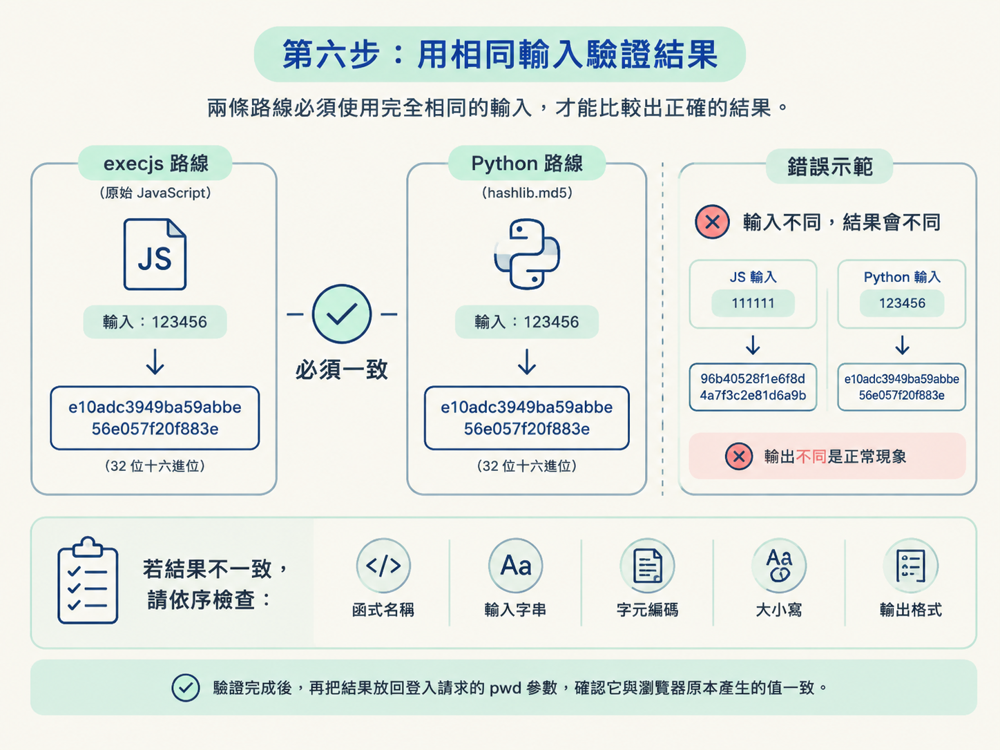

這一課會從登入請求中的 32 位密碼參數開始，實際走完「抓取請求 → 定位程式碼 → 設定斷點 → 重現演算法」的流程。
完成後，你會找到產生密碼參數的 JavaScript 函式，並能選擇兩種方式重現：保留原始 JavaScript，交給 execjs 執行；或確認它是標準 MD5 後，改用 Python 的 hashlib.md5。
前置條件：電腦已安裝 PyExecJS 與 Node，並且能操作 DevTools 的 Network、Sources、全域搜尋與斷點功能。
這次不從一大包壓縮過的 JavaScript 開始硬讀。那就像走進倉庫後，從第一個紙箱一路翻到最後一個，費力又容易迷路。
比較有效率的做法，是先從 Network 面板找到登入請求，再以參數名稱反查程式碼。接著用斷點確認資料流向，最後才決定要搬運原始 JavaScript，還是直接用 Python 重寫。
execjs 執行原始函式，或用 hashlib 重現標準 MD5。開啟 DevTools 的 Network 面板，觸發一次登入，再查看送出的請求。你會看到密碼不是以明文傳送，而是變成一串固定長度的字元。
這個案例的結果是 32 個十六進位字元。這種格式常見於 MD5 摘要，因此可以先把 MD5 列為候選答案。
不過，長度只能提供搜尋方向，不能單獨當成證明。其他程式也可能產生相同長度的字串，所以接下來仍要追進 JavaScript，確認它實際呼叫了什麼。
繼續查看登入請求的參數，你會發現這串結果被放在 pwd 欄位中。
這個名稱就是逆向入口。與其猜測哪個檔案可能負責加密，不如直接搜尋 pwd，看看程式在哪裡組裝這個請求。
切換到 Sources 面板，對載入的程式碼執行全域搜尋。先搜尋 pwd；如果結果太多，再改搜更精準的 pwd:。
預期會找到一段建立登入參數的程式碼。真正的加密實作不一定寫在旁邊，但這裡通常會出現函式呼叫，告訴你密碼值是從哪裡來的。
如果搜尋結果經過壓縮、數量太多，或看不出哪一筆才是登入流程，就回到 Network 面板。找到登入請求後，從它的發起堆疊跳進 JavaScript，再沿著呼叫關係往回追。
全域搜尋適合參數名稱清楚、能直接命中請求組裝處的情況；請求堆疊則適合關鍵字太常見，或程式經過大量包裝的情況。
在組裝 pwd 的可疑程式碼旁設定斷點，接著回到頁面，再觸發一次登入。
程式暫停後，先查看目前這一層的變數值，再沿著呼叫堆疊往上追。這個案例最後會看到密碼結果由 P(t) 的呼叫回傳，因此 P 就是接下來要抽取的目標。
把相關函式整理出來後，核心結構如下。中間大量位元運算的輔助函式暫時省略，但實際執行時仍要保留完整內容：
function R(t) {
return q(M(t))
}
…
function getPwd(t, p, n) {
if (!p) {
if (!n) {
return R(t)
} else {
return M(t)
}
}
if (!n) {
return U(p, t)
} else {
return B(p, t)
}
}
// var result = getPwd('111111')
// console.log(result)
// 96e79218965eb72c92a549dd5a330112getPwd(t, p, n) 會依照 p 與 n 是否存在，選擇不同處理分支。只傳入第一個參數時，會走進 return R(t)，而 R(t) 又會串起 M 與 q。
這段程式下方還留下了一組可驗證的資料：輸入 '111111'，預期得到 96e79218965eb72c92a549dd5a330112。搭配函式中的位元運算，可以進一步確認這是 MD5 的實作，而不只是根據長度猜測。

如果演算法經過客製化，或你暫時不想拆解整段位元運算，可以先保留原始 JavaScript。把抽出的完整程式存成 main.js，再交給 execjs 編譯與呼叫：
#1.导包
import execjs
#2.创建node对象
node = execjs.get()
#3.编译js文件返回上下文ctx对象(将js文件中的代码读取出来，被compile进行编译)
fp = open('main.js','r',encoding='utf-8')
ctx = node.compile(fp.read())
#4.使用上下文对象ctx调用eval函数执行js文件中的指定函数即可
result = ctx.eval('P("123456")')
print(result)這段程式先匯入 execjs，再由 execjs.get() 取得可用的 JavaScript 執行環境。接著讀取 main.js，並用 compile 建立執行內容。
最後一行透過 ctx.eval 呼叫斷點中找到的 P，並傳入密碼 "123456"。整理後的函式可能命名為 getPwd，實際呼叫時要以你存進 main.js 的名稱為準。
這條路線適合函式依賴單純、可以在 Node 中直接執行的情況。如果程式大量使用 window、document 或其他瀏覽器物件，就不能只把函式貼進去執行，還需要處理環境差異。
這個案例已經確認使用標準 MD5，因此不必保留整段 JavaScript。Python 內建的 hashlib 就能完成相同工作：
from hashlib import md5
pwd = '123456';
obj = md5()
obj.update(pwd.encode("utf-8"))
bs = obj.hexdigest()
print(bs)第一行匯入 MD5 工具。接著把密碼依 UTF-8 編碼成位元組，交給 update 計算摘要，最後用 hexdigest 取得十六進位字串。
這種做法程式短，也不依賴 Node 執行 JavaScript。不過，只有在演算法、文字編碼與輸出格式都已確認時才適用。如果網站加入鹽值、拼接固定字串，或修改過標準流程，就不能只對原始密碼呼叫 md5。
驗證時，兩條路線必須使用完全相同的輸入。不要拿 JavaScript 的 '111111' 與 Python 的 '123456' 直接比較，否則輸出不同是正常現象。
你可以把兩邊都改成同一組測試密碼，再比較產生的 32 位十六進位字串。若結果一致，代表重現成功；若不一致，就依序檢查函式名稱、輸入字串、字元編碼、大小寫與輸出格式。
驗證完成後，再把結果放回登入請求的 pwd 參數，確認它與瀏覽器原本產生的值一致。

| 情況 | 建議做法 | 原因 |
|---|---|---|
| 已確認是標準 MD5 | 使用 Python hashlib.md5 |
程式較短，也不需要處理 Node 與瀏覽器環境差異 |
| 演算法經過客製化 | 先用 execjs 執行原始程式 |
可以保留網站原本的處理流程，減少重寫錯誤 |
| JavaScript 依賴瀏覽器物件 | 先處理環境依賴，再考慮 execjs |
Node 不會自動提供完整的瀏覽器環境 |
| 只有 32 位字串，尚未找到函式 | 繼續追程式碼，不要立刻定案 | 長度只是線索，不能單獨證明演算法就是 MD5 |
走完這套程序後，你會取得一個可重複呼叫的密碼處理方式。它可能是由 execjs 呼叫的原始 JavaScript，也可能是使用 hashlib.md5 的 Python 函式。
無論選哪一條路，驗收標準都相同：給兩邊相同密碼時，輸出必須與瀏覽器放進 pwd 的 32 位結果一致。
這個案例的操作路線是：從 Network 找到 32 位密碼值，確認它位於pwd參數，再到 Sources 全域搜尋pwd或pwd:。找到請求組裝位置後設定斷點，沿著呼叫堆疊定位P(t)，最後抽出函式並驗證它是 MD5。若演算法客製化，可先用execjs保留原始流程；若已確認是標準 MD5，則用 Pythonhashlib.md5會更直接。
這次的重點不是背下某個函式名稱，而是建立一條可以重複使用的逆向路線：先從請求找入口，再用斷點確認資料流，最後依演算法特性選擇執行原碼或重新實作。至於遇到瀏覽器物件依賴時，該如何補齊 Node 環境，則留到補環境與環境檢測的主題再深入處理。